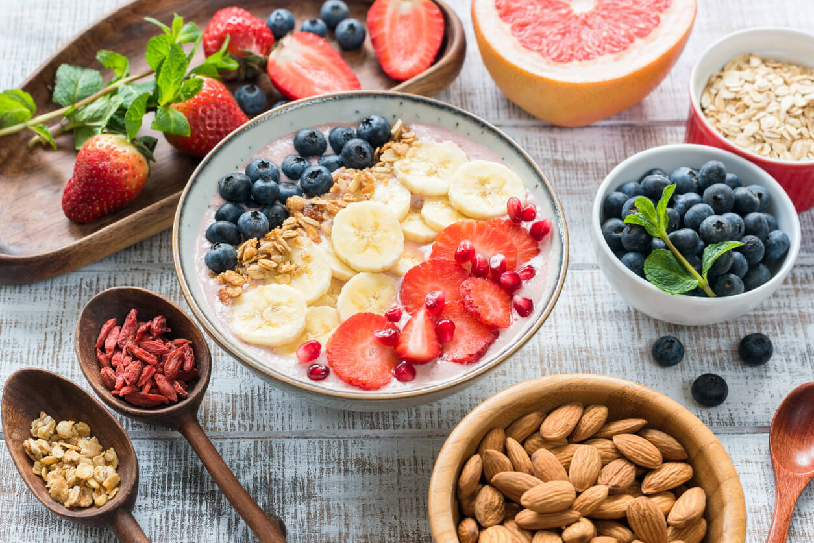
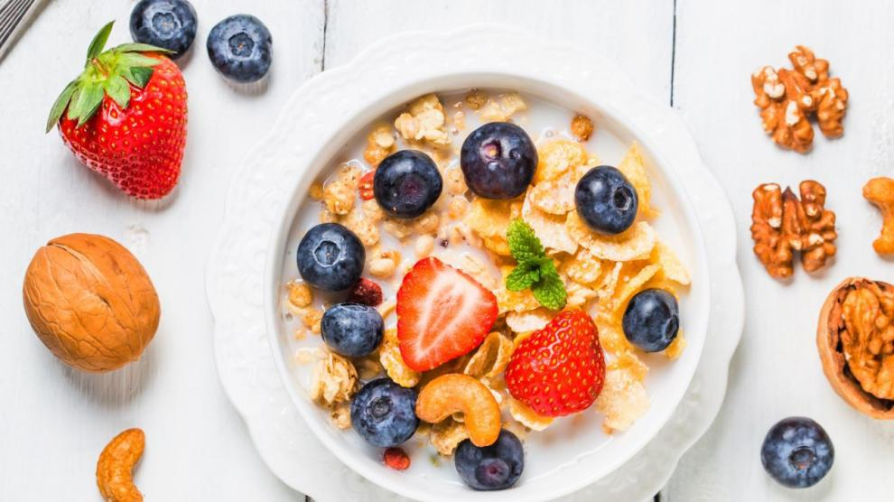
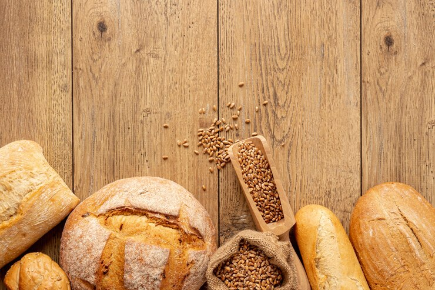

Desayunos y Meriendas saludables
Mix frutal
Mix frutal con frutos secos

- Baguetines
- Tortas
- Tostados integrales
- Medialunas integrales
- Pan de harina de sorgo
- Pan de centeno
Panes caseros
Pan de masa madre
Medialunas de quinoa
Alfajores de algarroba
Alafajores de garbanzos
Alfajores de avena y miel
Alfajores de mani
Pansitos de almendras
Pan de Centeno
Pan de harina de sorgo
pan de lentejas
Pan de mijo